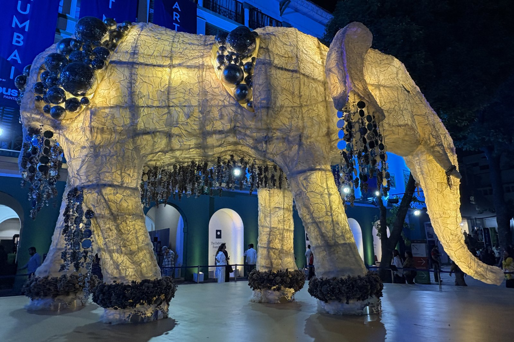
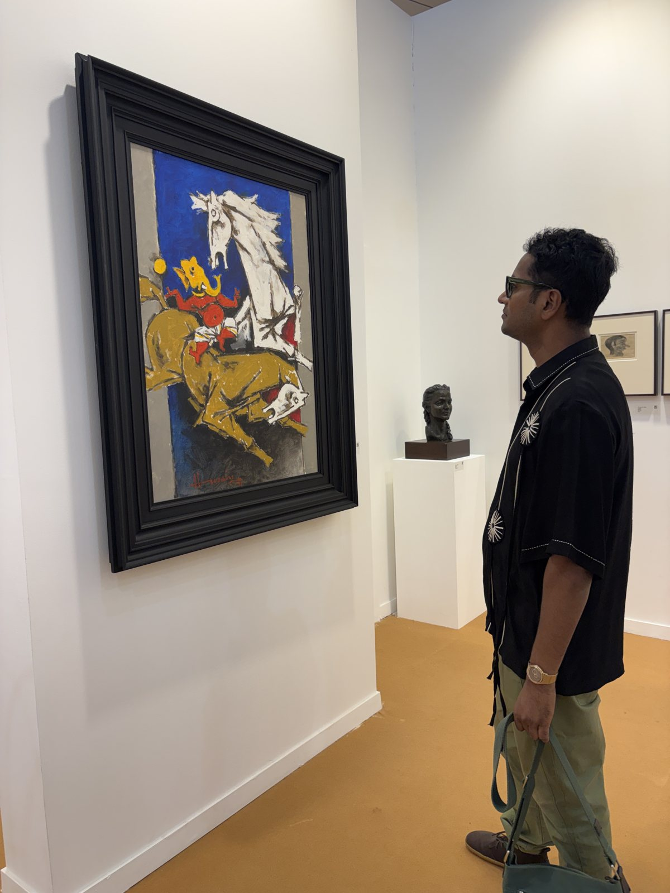

Who Builds Cultural Authority?
An art fair, a French town with a 400-year-old sweet, and how an institution earns its standing.

I went to Art Mumbai in November and photographed the works that caught my eye.
They were very different from one another. G.R. Santosh’s Shattering Thought. A Gaitonde with an extraordinary teal field. Richa Arya stitching with brass wire, Vibha Galhotra working with ghungroos, and Dinabandhu Das’s photographs of Calcutta interiors in Dreamfall, vanishing as you look. Sometimes it was the image that held me, sometimes the material.
Thousands of works, more than anyone could absorb. And every one of them had reached that tent the same way: an artist’s practice, a gallery that stood behind it, a label, a price, a way of reaching the people walking past. The fair wasn’t just putting paintings in a tent. It was organising attention, and helping people decide what to look at.
That stayed with me, because I’ve been circling this question for a while. Why do we treat some works, practices and products as more valuable than others? And who builds the institutions that make those judgements stick?

A town with a sweet and a story
On 18 July 2021, when I was in Paris building my startup, a friend and I went to Moret-sur-Loing, a small medieval town an hour south-east of the city. It’s known for barley sugar. Benedictine nuns started making it there in 1638; the recipe is still a secret; it’s made the same way today. There’s a museum for it in an old mill on an island in the river, and a shop that sells the sweets in replica period tins. Napoleon liked them, apparently. Sarah Bernhardt warmed her voice with them.
It wasn’t simply someone making a sweet. A whole context had grown around it: the place, its makers, its history, the idea that this small thing deserved attention. And that context is what gives the people who make it their standing.
I keep thinking about Indian towns. Of course the traditions exist, in their thousands. The question is what helps them become visible, admired and worth paying for. Who tells the story, writes the book, sets the standard, runs the museum, trains the next generation, brings the work to a new audience?

Three signals in one week
This November gave an unusual set of clues, all at once.
In Venice, India has a pavilion at the Biennale for the first time in seven years, built by the Ministry of Culture with two private foundations. In Delhi, on 13 November, the same ministry convened philanthropists, businesses and practitioners to help build a creative economy, and its secretary said it is open to for-profit partnerships. And in Mumbai, Art Mumbai’s fourth edition drew 94 exhibitors, 21 of them from abroad.
International visibility, policy convening, a commercial fair. None of them proves the cultural economy is healthy. Together they say the conversation has moved from celebrating Indian culture to a harder question: what does it take to build the institutions and businesses that can sustain it?
How an institution earns its standing
Think of a film festival. Its credibility rests on filmmakers wanting to submit. If nobody comes, the festival can have a grand name and no standing at all.
That’s the mechanism, and it’s simpler than it looks. An institution needs a credible nucleus: a few people whose judgement is already trusted. Their involvement makes others want to take part. Participation brings attention, attention brings more credible people and resources, and if the institution keeps doing useful work and stays consistent, the trust accumulates until its recognition travels. Marketing can bring people to the door. It can’t manufacture judgement for long.
Which means the intelligent first question isn’t how do we start an institution? It’s: what exists today, what is missing, and where is the way in?
Where I could be useful
I’m not writing this as a critic. I’m writing it because I might want to build something here, eventually. A forum, a platform, an enabling business; I don’t yet know the form.
And I’ve realised the first task isn’t a business plan. It’s a map. Who already builds trust in this field? Where do producers struggle despite having recognition? And when does a new intermediary add value, and when is it just one more layer taking its share? Harvey’s warning from the last piece applies to me as much as to anyone: judge an institution by the value it creates and by where that value ends up.
I keep thinking about ecosystems, too. In nature nothing performs every function; parts depend on one another. That may be a better picture of a healthy craft economy than the lone artisan who’s also expected to be a brand, a distributor and a bank. Dastkar, the Crafts Council, IICD and others have been building parts of that web for decades. If I build anything, it starts by learning what they’ve learned.
My question began with why some cultures have such powerful vocabularies of taste. It’s ended somewhere more practical: how those vocabularies get built, how they earn their authority, and whether there’s room for me in the web around the people who make things.
Not a thesis. A place to begin.
Sources and notes
- Musée du Sucre d’Orge, Moret-sur-Loing (barley sugar made by Benedictine nuns since 1638)
- Paris ZigZag on the sucre d’orge of Moret-sur-Loing
- Ministry of Culture creative-economy convening, Delhi, 13 Nov 2026; Art Mumbai 2026 exhibitor count; India Pavilion at the Venice Biennale (press reports; figures to be re-checked before publishing)
- David Harvey, The Art of Rent (2002)